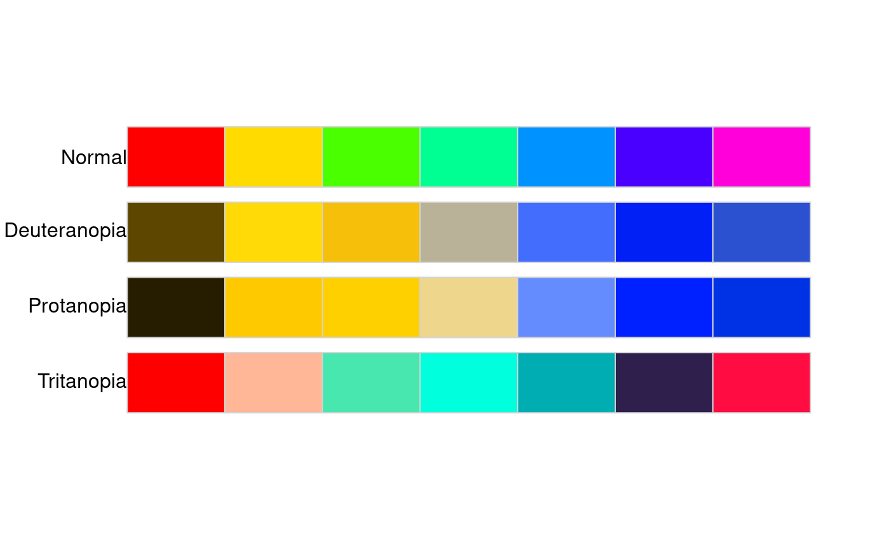
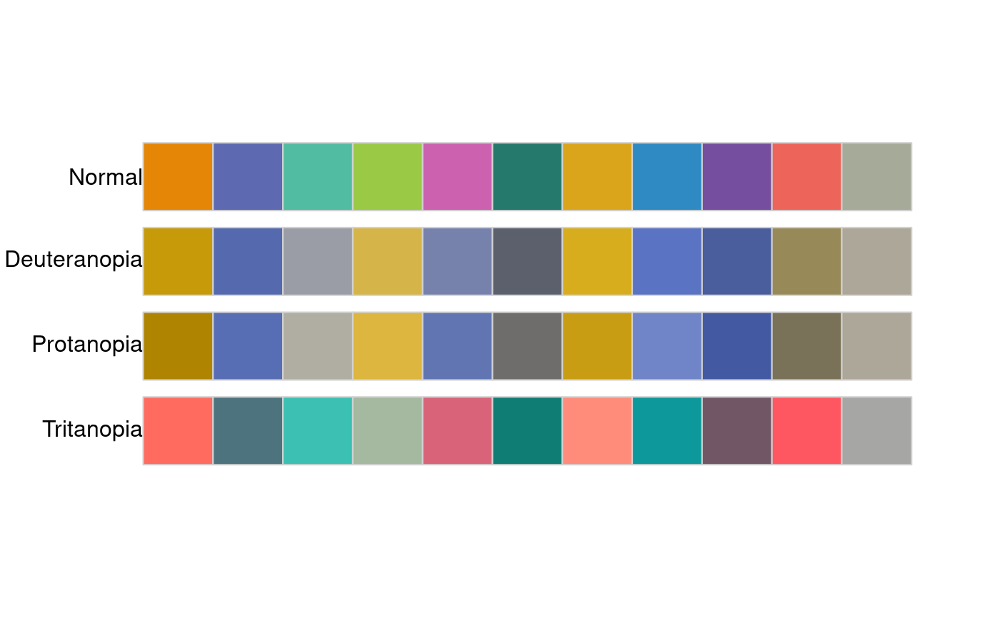
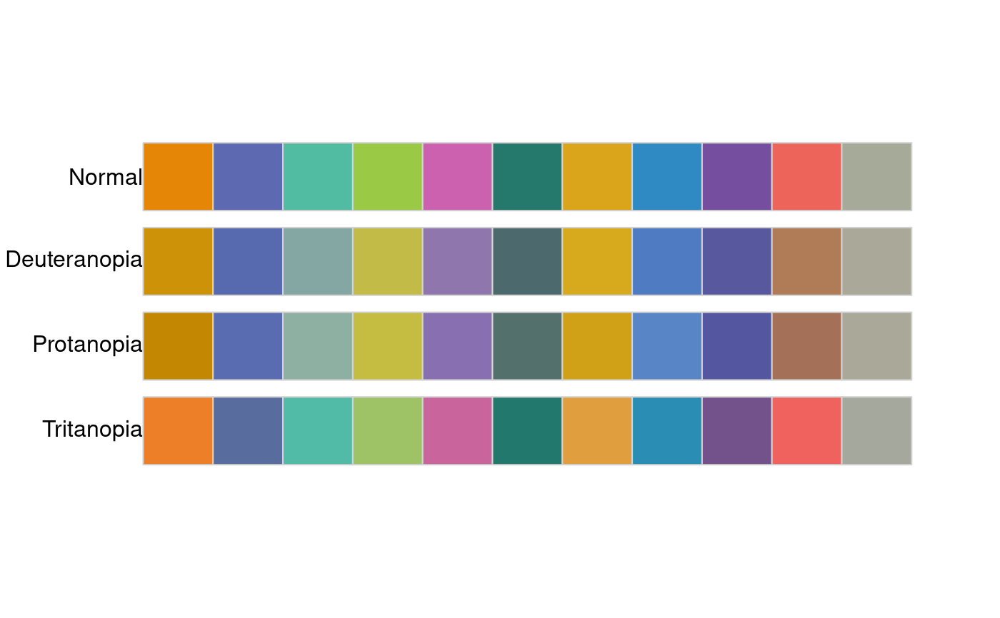
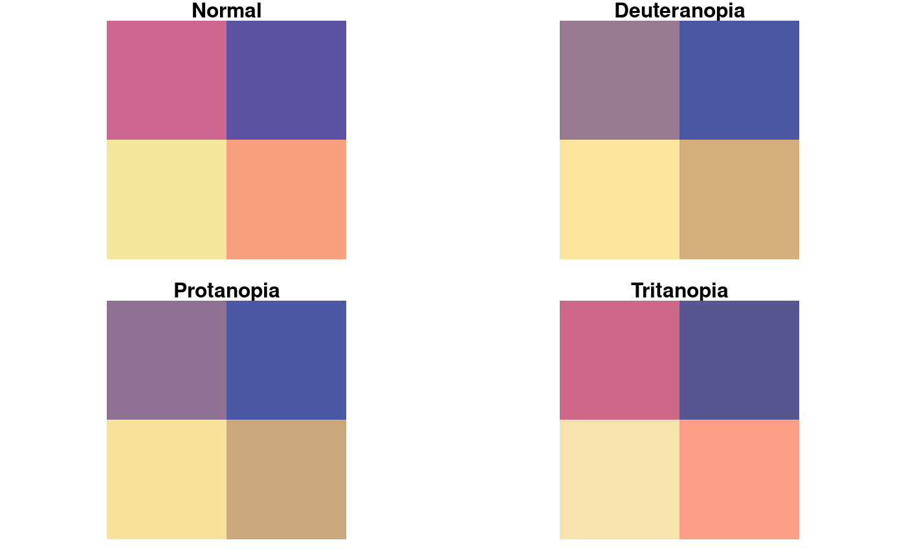

Comparision of the original input palette and simulations of color vision deficiencies - deuteranopia, protanopia, and tritanopia.
palette_check( x, tolerance = NULL, plot = FALSE, bivariate = FALSE, severity = 1, ... )
| x | A vector of hexadecimal color descriptions |
|---|---|
| tolerance | The minimal value of acceptable difference between the colors to distinguish between them. As the default, minimal distance between colors in the original input palette is given. |
| plot | If TRUE, display a plot comparing the original input palette and simulations of color vision deficiencies - deuteranopia, protanopia, and tritanopia |
| bivariate | If TRUE (and plot = TRUE), display a bivariate plot (plot where colors are located in columns and rows) comparing the original input palette and simulations of color vision deficiencies - deuteranopia, protanopia, and tritanopia |
| severity | Severity of the color vision defect, a number between 0 and 1 |
| ... | Other arguments passed on to |
A data.frame with 4 observations and 8 variables:
name: orginal input color palette (normal), deuteranopia, protanopia, and tritanopia
n: number of colors
tolerance: minimal value of acceptable difference between the colors to distinguish between them
ncp: number of color pairs
ndcp: number of differentiable color pairs (color pairs with distances above the tolerance value)
min_dist: minimal distance between colors
mean_dist: average distance between colors
max_dist: maximal distance between colors
Additionally, a plot comparing the original input palette and simulations of color vision deficiencies - deuteranopia, protanopia, and tritanopia can be shown.
#> [1] "#FF0000" "#FFDB00" "#49FF00" "#00FF92" "#0092FF" "#4900FF" "#FF00DB"palette_check(rainbow_pal, plot = TRUE)#> name n tolerance ncp ndcp min_dist mean_dist max_dist #> 1 normal 7 12.13226 21 21 12.132257 61.06471 107.63470 #> 2 deuteranopia 7 12.13226 21 18 7.725825 50.11732 91.56339 #> 3 protanopia 7 12.13226 21 19 2.355309 55.41310 88.34820 #> 4 tritanopia 7 12.13226 21 19 8.216194 51.53678 83.10000#> name n tolerance ncp ndcp min_dist mean_dist max_dist #> 1 normal 11 12.84607 55 55 12.846069 40.02555 77.24506 #> 2 deuteranopia 11 12.84607 55 46 4.208622 30.59808 60.47220 #> 3 protanopia 11 12.84607 55 46 2.467907 30.36647 63.01571 #> 4 tritanopia 11 12.84607 55 49 5.474586 34.71316 63.26528palette_check(x, plot = TRUE)#> name n tolerance ncp ndcp min_dist mean_dist max_dist #> 1 normal 11 12.84607 55 55 12.846069 40.02555 77.24506 #> 2 deuteranopia 11 12.84607 55 46 4.208622 30.59808 60.47220 #> 3 protanopia 11 12.84607 55 46 2.467907 30.36647 63.01571 #> 4 tritanopia 11 12.84607 55 49 5.474586 34.71316 63.26528palette_check(x, tolerance = 1)#> name n tolerance ncp ndcp min_dist mean_dist max_dist #> 1 normal 11 1 55 55 12.846069 40.02555 77.24506 #> 2 deuteranopia 11 1 55 55 4.208622 30.59808 60.47220 #> 3 protanopia 11 1 55 55 2.467907 30.36647 63.01571 #> 4 tritanopia 11 1 55 55 5.474586 34.71316 63.26528palette_check(x, tolerance = 10, metric = 1976)#> name n tolerance ncp ndcp min_dist mean_dist max_dist #> 1 normal 11 10 55 55 12.846069 40.02555 77.24506 #> 2 deuteranopia 11 10 55 52 5.712302 55.17919 117.86394 #> 3 protanopia 11 10 55 50 3.211995 54.43596 113.78993 #> 4 tritanopia 11 10 55 55 10.378234 53.61405 108.43655palette_check(x, plot = TRUE, severity = 0.5)#> name n tolerance ncp ndcp min_dist mean_dist max_dist #> 1 normal 11 12.84607 55 55 12.846069 40.02555 77.24506 #> 2 deuteranopia 11 12.84607 55 51 6.709946 33.05325 64.82903 #> 3 protanopia 11 12.84607 55 50 8.058932 33.38697 66.81266 #> 4 tritanopia 11 12.84607 55 54 11.882822 37.61087 66.42226y = rcartocolor::carto_pal(4, "Sunset") palette_check(y, plot = TRUE, bivariate = TRUE, severity = 0.5)#> name n tolerance ncp ndcp min_dist mean_dist max_dist #> 1 normal 4 28.27696 6 6 28.27696 42.88452 67.75598 #> 2 deuteranopia 4 28.27696 6 4 15.46777 39.37954 65.55752 #> 3 protanopia 4 28.27696 6 4 17.50482 39.50816 65.14327 #> 4 tritanopia 4 28.27696 6 4 22.28623 38.35078 59.34859